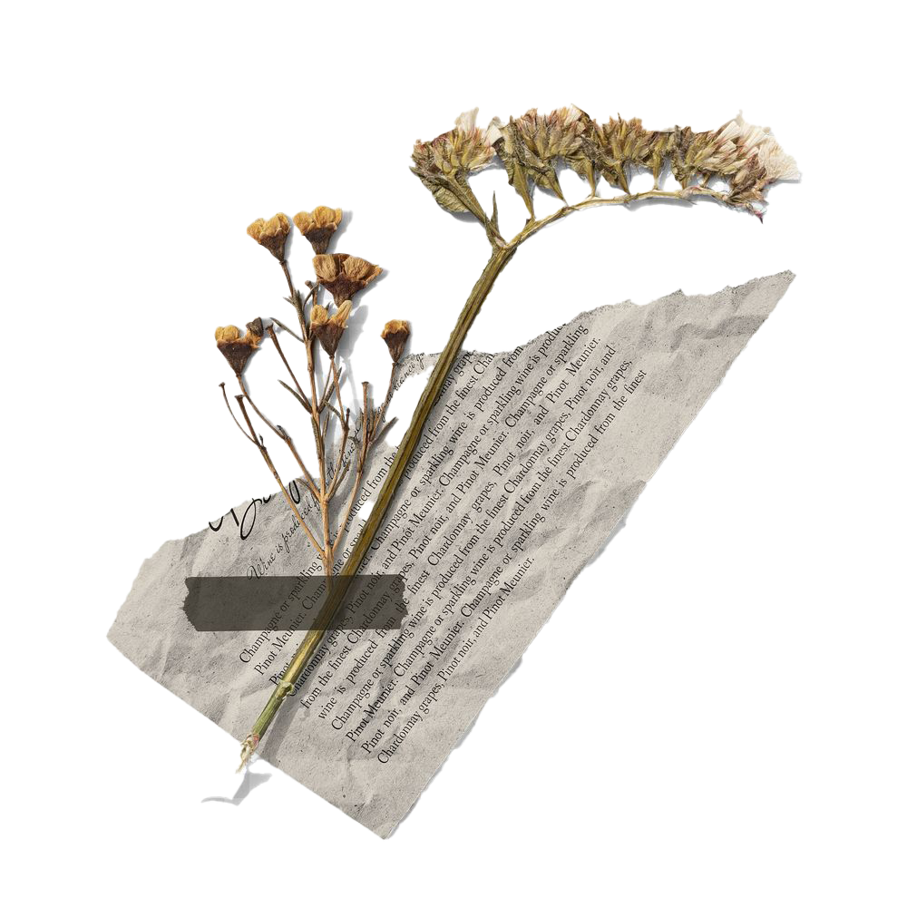
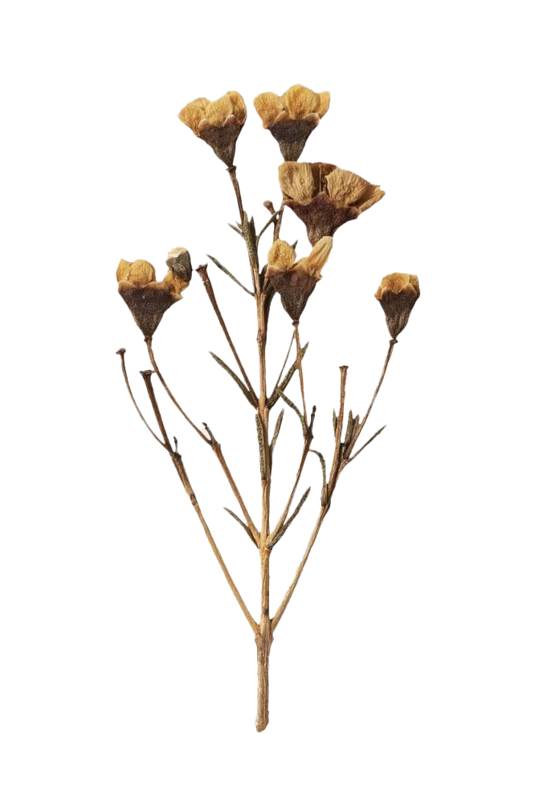
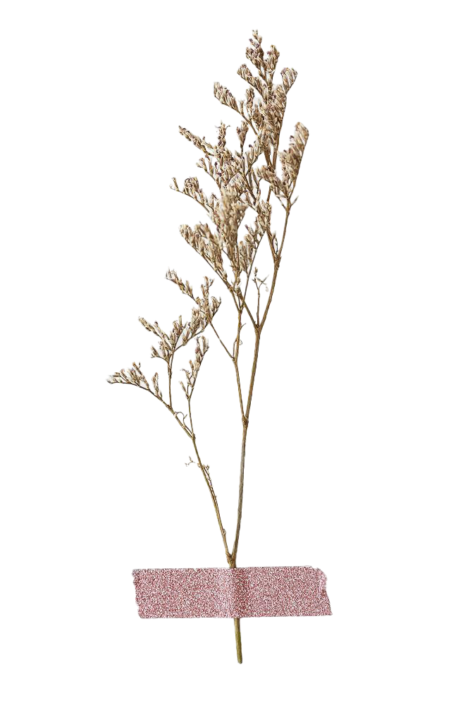
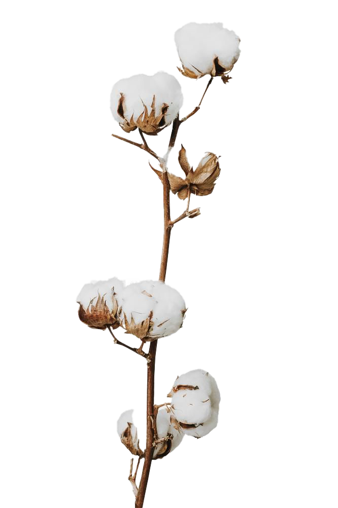
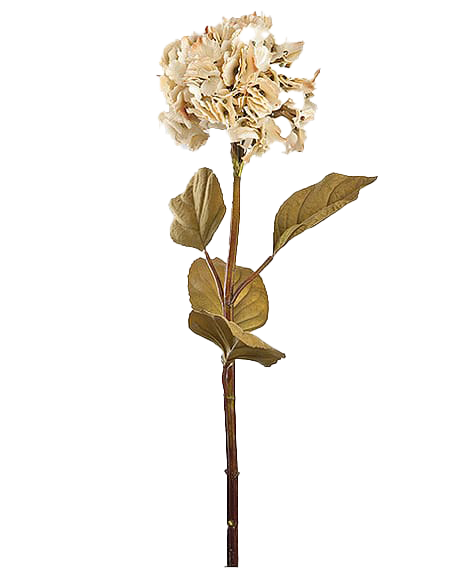

In this section, we delve into the essence of souls using the metaphor of flowers. Each flower represents a soul, unique in its bloom yet vulnerable to the harsh winds of fate. Through vibrant illustrations, we depict the fragility and resilience of the human spirit.